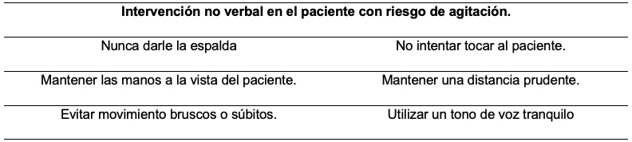

Definición
Objetivo
Preceptos Legales de Aplicación
Indicaciones
Contraindicaciones
En Resumen
Abordajes Alternativos
Abordaje Verbal
Abordaje Ambiental
Abordaje Farmacológico
Consideraciones
Participación y Abordaje
Personal Responsable del Cuidado
Médico
Enfermera/o
Auxiliar de Enfermería
Material Utilizado en Caso de Contención Mecánica
Instauración de la Contención Mecánica
Precauciones Universales para Tener en Cuenta
Riesgos Potenciales
Cuidados de Enfermería al Paciente con Inmovilización